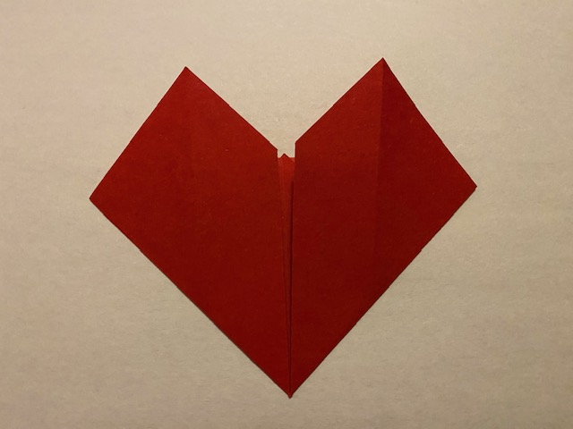

Instructions
Step 1:Get what you need
- You only need one square piece of origami paper to make this origami heart.
Step 2: Get heart shape
- Fold the paper in half in both diagonal directions to create a triangle.
- It should look like this:
- Rotate the paper so that the triangle is facing as a diamond.
- Next,fold the top corner to the middle crease.
- Then, take the bottom corner and the new top edge of the paper
- With the right and left side corners, fold the upwards to the half of the paper
- It should be a Heart shape.

Step 3: Final touches
- Now, flip the paper over and fold the top left and right little triangles to the folded edge right below them.
- Next, fold the left and right corners and fold inwards a lttle a get a cleaner heart shaped finish.
- Then flip it over
- Like this:
Congratulations!
- You made a Origami heart!